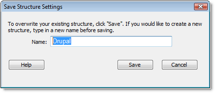

Save the site structure you have created in the Site-Specific Code Hints dialog, in order for code hints to display.
Note: If the site structure name is already being used by another structure, you will be prompted to enter a different name or confirm that you wish to overwrite that structure. You will not be able to overwrite a default preset structure.
Once you have saved your XML site structure, appropriate code hints will display as you work in Code view.
